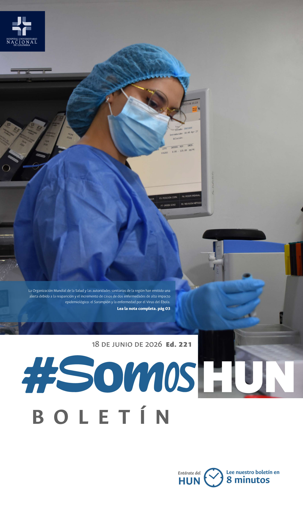
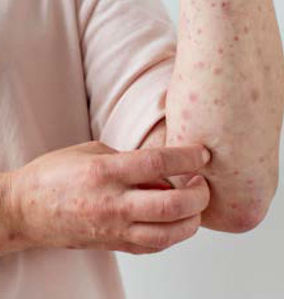
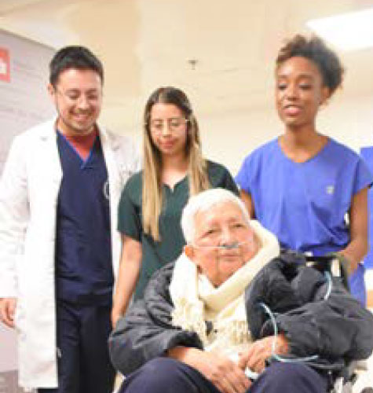
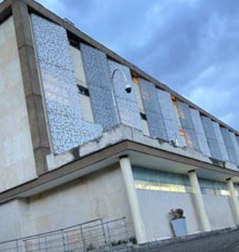

Ver todos los boletines
Escudo Epidemiológico: Cómo responde el HUN ante las alertas de Sarampión y Ébola
La Organización Mundial de la Salud y las autoridades sanitarias de la región han emitido una alerta debido a la reaparición y el incremento de casos de dos enfermedades de alto impacto epidemiológico: el Sarampión y la enfermedad por el Virus del Ébola.Leer más
Cartilla de Orientación en casos de Violencia
En el HUN declaramos una política de cero tolerancia frente a cualquier forma de violencia, entendida como toda conducta que atente contra la dignidad, la integridad física o emocional, o el respeto entre las personas. Estas situaciones no solo afectan el bienestar de los colaboradores, sino también la calidad del servicio, la seguridad del paciente y la confianza institucional.Leer más
Manual de Convivencia Laboral
En el Hospital Universitario Nacional creemos que el respeto, la comunicación y el trabajo colaborativo son fundamentales para brindar una atención segura y humanizada. Por ello, invitamos a todos nuestros colaboradores a conocer y consultar el Manual de Convivencia Laboral.Leer más

Alcemos la voz contra el abandono y maltrato en el adulto mayor
En el primer trimestre del año 2026, fueron atendidos más de 1.100 casos en las Comisarias de Familia en Bogotá de violencia contra las personas mayores, donde el 69% son mujeres y un 31% son hombres.Leer más
Recomendaciones para afrontar el Fenómeno del Niño
El HUN se centra en el compromiso social de brindar atención y promover la sostenibilidad ambiental, por lo tanto es de suma importancia que impulsemos la conciencia de nuestros colaboradores recordando el buen uso del agua y los tips claves para implementarlo en nuestro hospital.Leer más

Así se vivió el cierre de la Semana de la Responsabilidad Social
Barreras cutáneas, bolsas de suero y tapas plásticas desfilaron en la carpa del HUN, cambiando el ambiente hospitalario por una fiesta dedicada a la conciencia medioambiental.Leer más